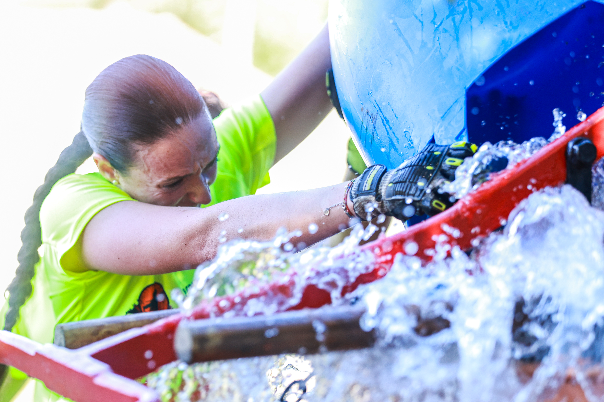
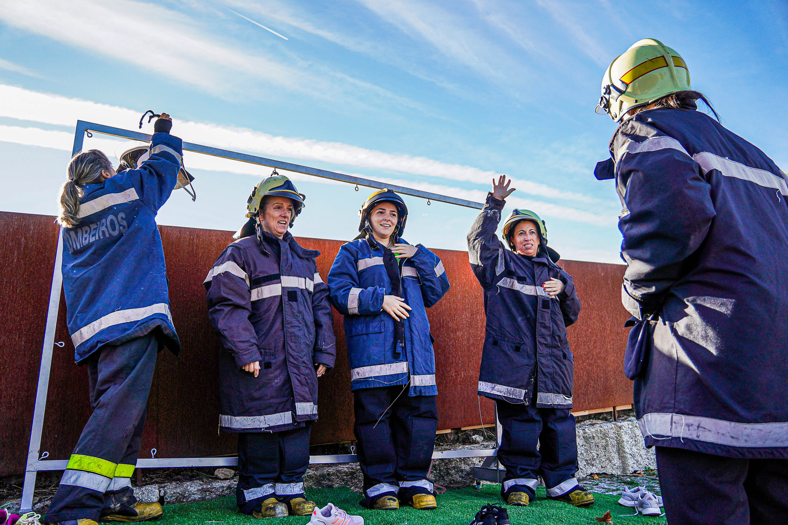
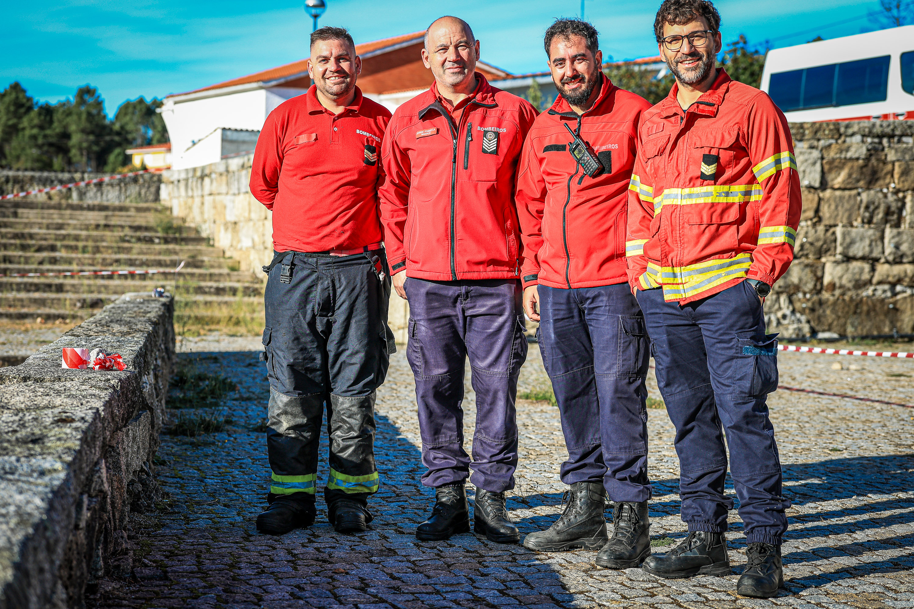

The Barrelas Fire Challenge returned to Vila Nova de Paiva on 10 October 2026, with a five-kilometre course and more than ten obstacles. Image Media documented the day through photographs of participants tackling physical challenges and sharing moments away from the course.
The event’s official account advertised a format built around distance and obstacles. In the supplied photographs, that challenge takes a tangible form: participants lift a large tyre together, while another competitor negotiates an obstacle amid splashing water.

Strength in shared effort
The tyre-lifting sequence captures the coordination demanded by a shared obstacle: several participants apply their strength to the same task. The water-obstacle image offers a different perspective, focusing on one competitor’s grip and concentration.

Away from those action shots, the photographs also record the people behind the effort. Firefighters in protective clothing gather together, and a group in red uniforms pauses for a portrait — a visual record of the event beyond the obstacles themselves.

Image Media coverage
Image Media’s coverage team comprised Mateus Pereira, Adilia Pinto, Eduardo Almeida, Iranildo Seabra, Leandro Rocha, Claudio João, Sérgio Mendes and Raul de Godoy. The photographs selected for this report are credited individually to Sérgio Mendes, Leandro Rocha and Adilia Pinto, following the names in the supplied filenames.
View the Barrelas Fire Challenge photo gallery →
Image Media coverage
Reporting: IM News Editorial Desk
Coverage photographers: Mateus Pereira, Adilia Pinto, Eduardo Almeida, Iranildo Seabra, Leandro Rocha, Claudio João, Sérgio Mendes and Raul de Godoy / Image Media
Date and location checked against Fotop event 337425; distance and obstacle format checked against the official event account. Photography credits supplied by Image Media and matched to filenames.